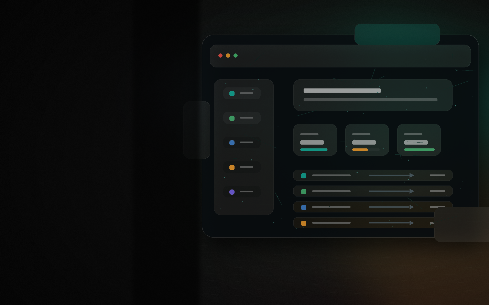

상황을 보냅니다
정리되지 않은 파일, 메일, 시트 그대로 보내도 됩니다. 원하는 결과만 함께 알려주세요.

Brand
문의함, 엑셀 파일, 정산표, 증빙 목록처럼 계속 열어봐야 하는 일을 정리합니다. 한 번 맡긴 업무는 기록으로 남기고, 반복되면 운영 기준과 자동화로 이어갑니다.
정리되지 않은 파일, 메일, 시트 그대로 보내도 됩니다. 원하는 결과만 함께 알려주세요.
무엇을 확인하고 어떤 파일로 받을지 먼저 합의한 뒤 처리합니다.
한 번 처리한 기준을 월간 점검, 리포트, 자동화 운영으로 이어갑니다.
How to use
정리가 안 된 상태여도 괜찮습니다. 문제를 찾는 단계부터 반복 업무를 운영하는 단계까지, 필요한 만큼만 맡길 수 있습니다.
자료와 현재 흐름을 보고 누락, 반복, 병목을 찾아 첫 정리 방향을 잡습니다.
엑셀, 시트, 문서, 리포트 형태로 바로 확인할 수 있게 정리합니다.
문의 분류, 데이터 대조, 정산 확인, 증빙 체크처럼 손이 가는 일을 처리합니다.
수식, 템플릿, 스크립트, Make·Zapier·n8n 흐름으로 반복 구간을 줄입니다.
주기적으로 확인하고, 놓친 지점과 다음 개선 업무를 운영 메모로 남깁니다.
Work layers
영업, 운영, 인사, 재무, 교육, 현장 관리에서 반복되는 공통 불편을 핵심 업무 범위로 묶었습니다. 엑셀 정리로 시작해 자동화, 내부 시스템 개발, 운영 점검까지 확장합니다.
공통 불편 · 무엇부터 손대야 할지 모릅니다
현재 자료, 사람, 도구, 처리 흐름을 보고 누락, 병목, 반복 구간을 찾아 첫 실행 범위를 정합니다.
매칭 업무업무 흐름 맵 · 우선순위 정리 · 산출물 정의 · 실행 계획
공통 불편 · 자료가 흩어져 기준이 없습니다
영업 현황, 정산, 인사 명단, 재고, 교육 이력처럼 직종마다 흩어진 자료를 하나의 기준표로 정리합니다.
매칭 업무Excel·Sheets 정리 · CSV 변환 · 기준표·리포트 템플릿
공통 불편 · 요청이 들어와도 상태가 보이지 않습니다
메일, 폼, 메신저, 전화로 들어오는 신청과 문의를 접수, 담당, 진행 상태, 다음 행동 기준으로 정리합니다.
매칭 업무신청 폼 · DB 적재 · 관리자 화면 · 알림·응답 기준
공통 불편 · 누락, 중복, 만료를 매번 손으로 찾습니다
매출, 결제, 환불, 증빙, 자격, 계약, 재고처럼 틀리면 손실이 되는 데이터를 대조하고 예외 후보를 표시합니다.
매칭 업무대조표 · 누락/중복 점검 · 만료 관리 · 예외 리포트
공통 불편 · 같은 복사, 입력, 보고를 계속 반복합니다
정기 보고, 파일 변환, 알림, 분류, 업로드처럼 사람이 반복하던 작업을 스크립트와 자동화 흐름으로 줄입니다.
매칭 업무스크립트 · Make/Zapier/n8n · API 연동 · 예약 실행
공통 불편 · 엑셀로는 더 이상 운영이 버겁습니다
신청, 승인, 조회, 권한, 로그, 운영 메모가 필요한 업무를 내부 웹 시스템과 데이터베이스로 전환합니다.
매칭 업무관리자 모드 · PostgreSQL · 권한/로그 · 배포·운영 점검
Deliverables
정리 리포트무엇이 막혔고 어떤 기준으로 처리했는지 남깁니다.
작업 파일엑셀, 시트, CSV, 스크립트처럼 바로 다시 쓸 수 있는 형태로 전달합니다.
다음 기준반복할 일, 자동화할 일, 확인 주기를 짧게 정리합니다.
Start
완벽한 자료는 필요 없습니다. 막히는 부분과 원하는 결과를 남기면 가능한 범위와 첫 산출물을 안내드립니다.